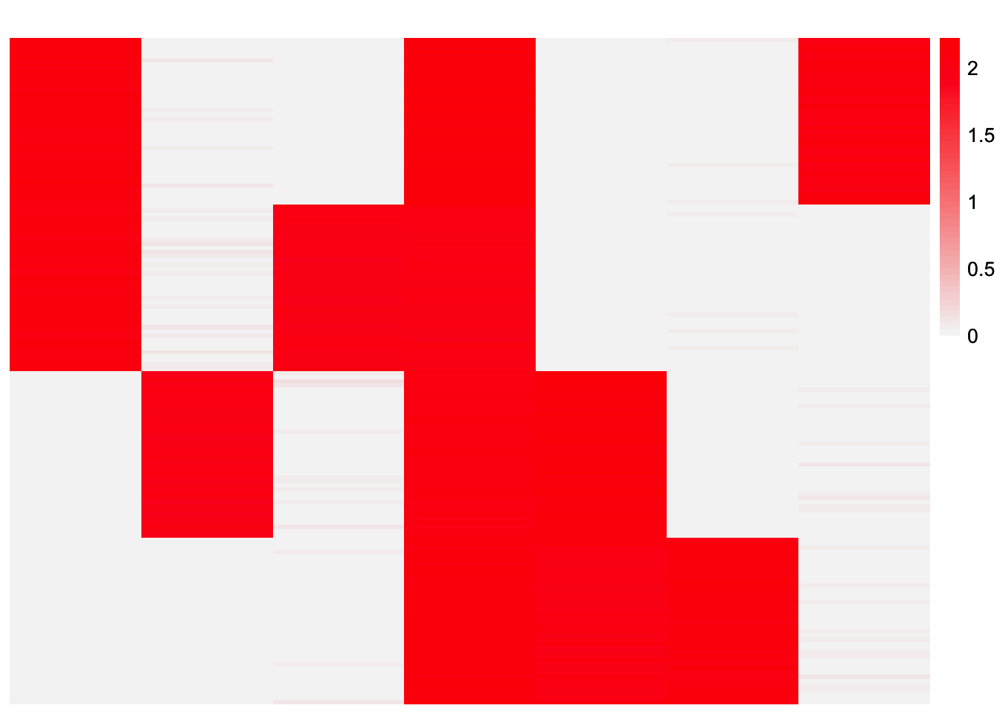
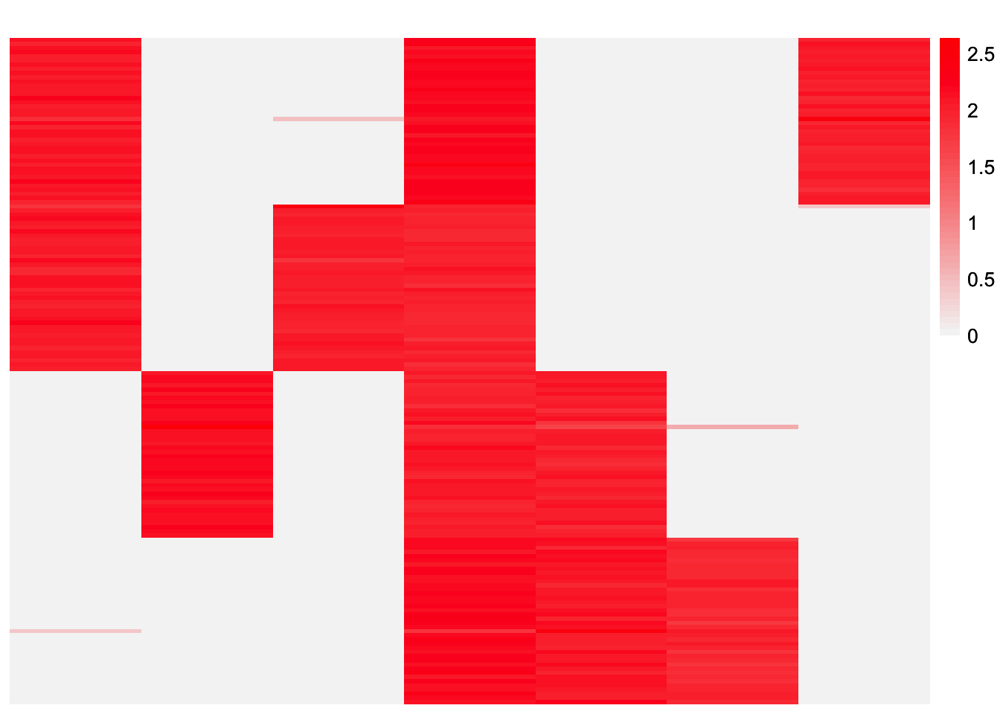
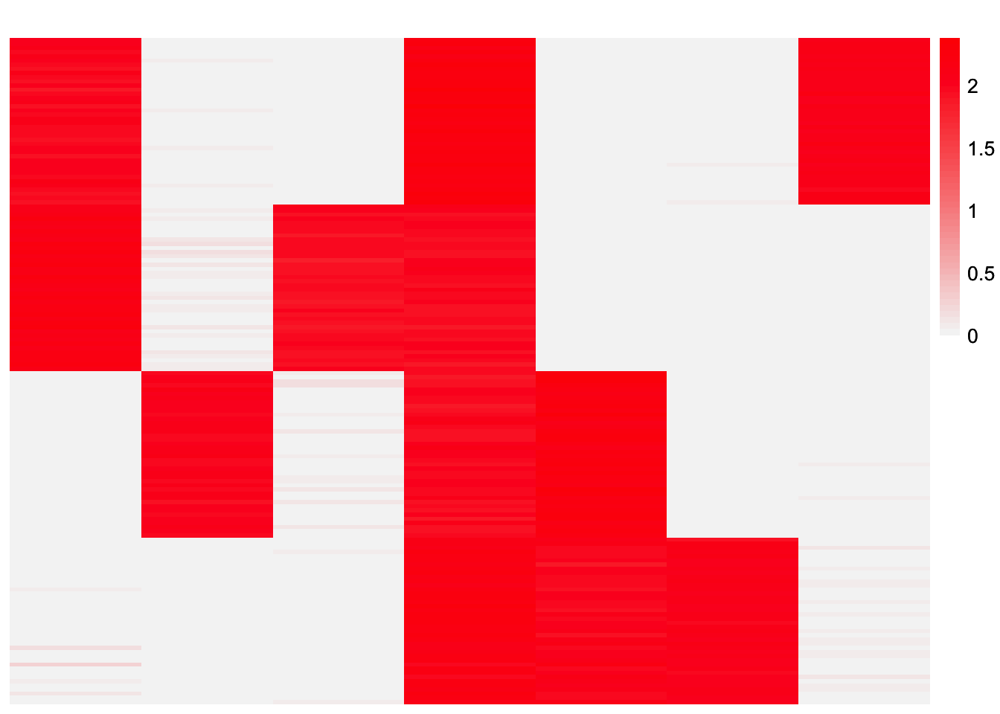
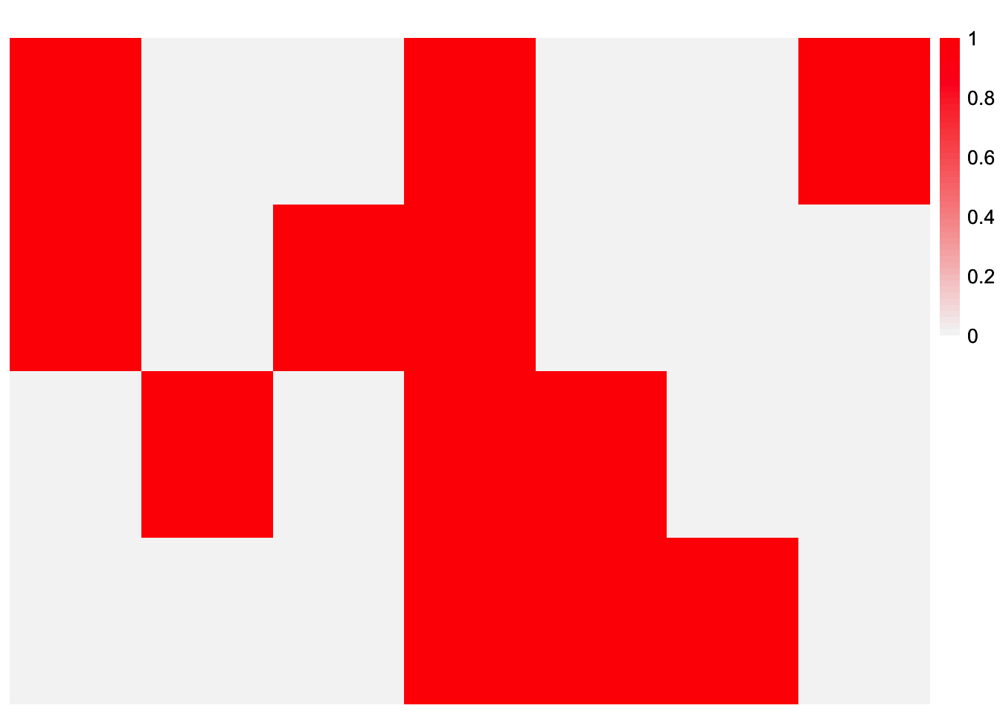
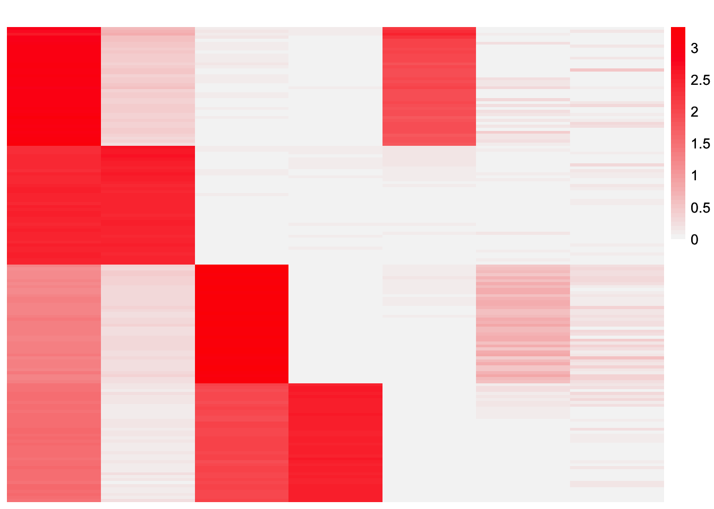
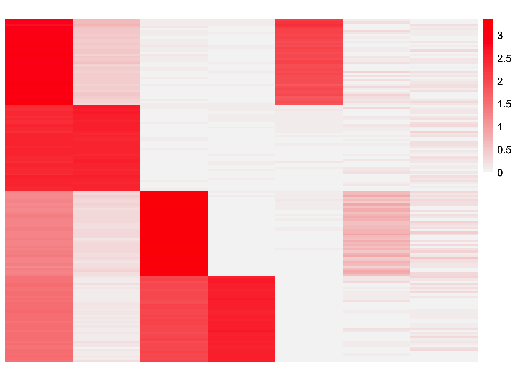
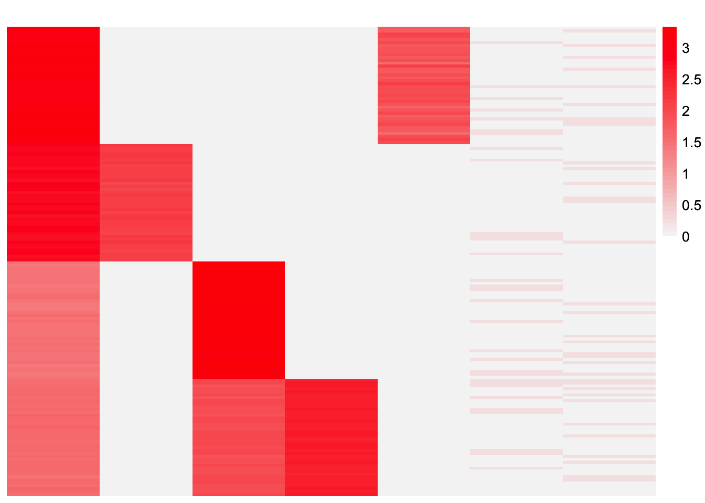
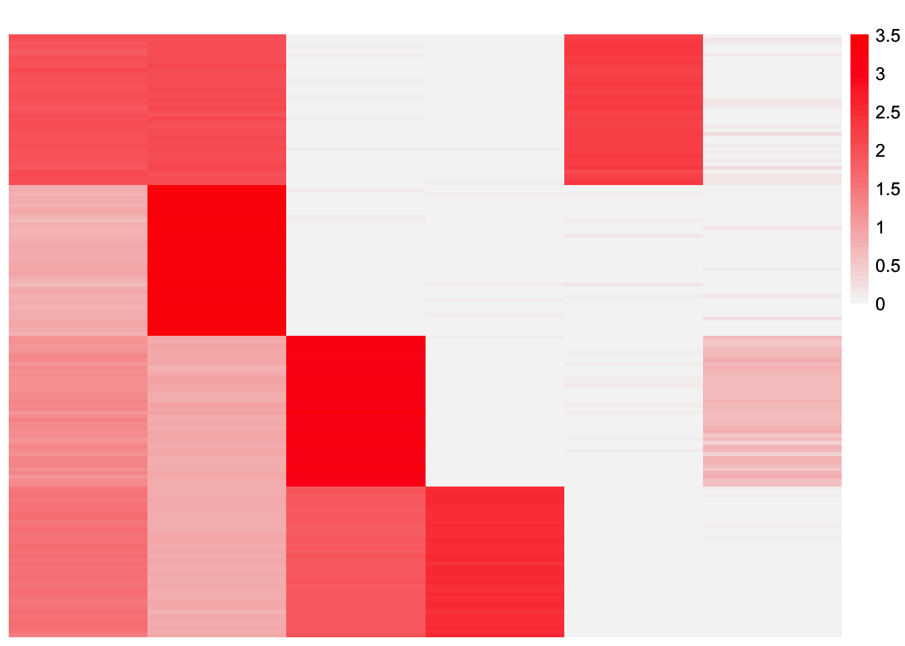
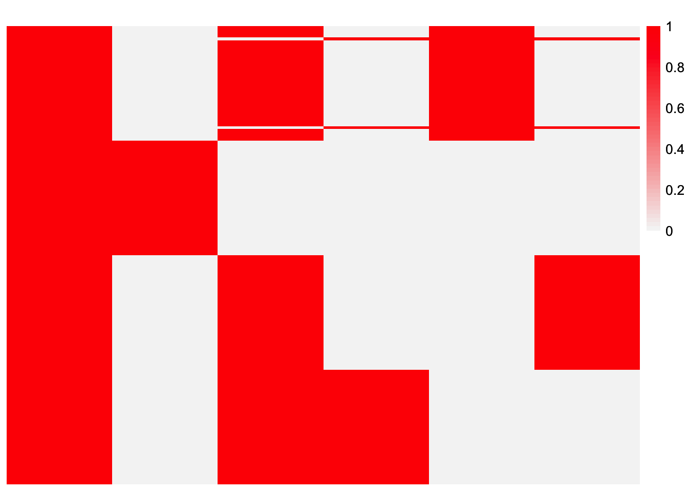

init_comparison_baltree_setting
Annie Xie
2025-09-22
Last updated: 2025-09-24
Checks: 7 0
Knit directory: covariance_decomps_dsc/
This reproducible R Markdown analysis was created with workflowr (version 1.7.1). The Checks tab describes the reproducibility checks that were applied when the results were created. The Past versions tab lists the development history.
Great! Since the R Markdown file has been committed to the Git repository, you know the exact version of the code that produced these results.
Great job! The global environment was empty. Objects defined in the global environment can affect the analysis in your R Markdown file in unknown ways. For reproduciblity it’s best to always run the code in an empty environment.
The command set.seed(20250203) was run prior to running
the code in the R Markdown file. Setting a seed ensures that any results
that rely on randomness, e.g. subsampling or permutations, are
reproducible.
Great job! Recording the operating system, R version, and package versions is critical for reproducibility.
Nice! There were no cached chunks for this analysis, so you can be confident that you successfully produced the results during this run.
Great job! Using relative paths to the files within your workflowr project makes it easier to run your code on other machines.
Great! You are using Git for version control. Tracking code development and connecting the code version to the results is critical for reproducibility.
The results in this page were generated with repository version fd1e05f. See the Past versions tab to see a history of the changes made to the R Markdown and HTML files.
Note that you need to be careful to ensure that all relevant files for
the analysis have been committed to Git prior to generating the results
(you can use wflow_publish or
wflow_git_commit). workflowr only checks the R Markdown
file, but you know if there are other scripts or data files that it
depends on. Below is the status of the Git repository when the results
were generated:
Ignored files:
Ignored: .DS_Store
Ignored: .Rhistory
Ignored: data/.DS_Store
Ignored: data/adclus_cov_comp_dsc_ex/.DS_Store
Ignored: data/adclus_same_init_dsc_ex/.DS_Store
Ignored: data/pt_laplace_split_init_ex/.DS_Store
Untracked files:
Untracked: analysis/init_comparison_overlap_setting.Rmd
Note that any generated files, e.g. HTML, png, CSS, etc., are not included in this status report because it is ok for generated content to have uncommitted changes.
These are the previous versions of the repository in which changes were
made to the R Markdown
(analysis/init_comparison_baltree_setting.Rmd) and HTML
(docs/init_comparison_baltree_setting.html) files. If
you’ve configured a remote Git repository (see
?wflow_git_remote), click on the hyperlinks in the table
below to view the files as they were in that past version.
| File | Version | Author | Date | Message |
|---|---|---|---|---|
| Rmd | fd1e05f | Annie Xie | 2025-09-24 | Add comparison of initialization in baltree setting |
Introduction
In this analysis, I investigate the different initialization strategies in the balanced tree setting.
library(dplyr)
library(ggplot2)
library(ggrepel)
library(pheatmap)source('code/visualization_functions.R')Data
baltree_4pop_1 <- readRDS('data/baltree_4pop_1.rds')This is a heatmap of the true loadings matrix:
plot_heatmap(baltree_4pop_1$true_L)
point-Laplace Initialization
library(flashier)Loading required package: ebnmlaplace_split_initialization <- function(S, Kmax, verbose = 2, backfit_maxiter = 500, backfit_tol = NULL){
# backfitting is important in the tree setting
# fit point-laplace fit with flash
flash_laplace_fit <- flash_init(data = S, var_type = 0) |>
flash_set_verbose(verbose = verbose) |>
flash_greedy(Kmax = Kmax, ebnm_fn = ebnm::ebnm_point_laplace) |>
flash_backfit(maxiter = backfit_maxiter, tol = backfit_tol) |>
flash_nullcheck()
# rescale fit so that L and F are of the same scale
flash_laplace_fit_scaled <- ldf(flash_laplace_fit, 'i')
LL <- flash_laplace_fit_scaled$L
##FF <- flash_laplace_fit_scaled$F
# split into positive and negative components
LL <- cbind(pmax(LL, 0), pmax(-LL, 0))
##FF <- cbind(pmax(FF, 0), pmax(-FF, 0))
# remove columns of zeros
idx.nonzero <- apply(LL, 2, function(x){return(sum(x^2))}) > 10^(-10)
LL <- LL[, idx.nonzero]
# refit weights by least squares
n <- nrow(S)
llt_vec <- matrix(rep(0, ncol(LL)*n*n), ncol = ncol(LL))
for (i in 1:ncol(LL)){
llt_vec[,i] <- c(LL[,i]%*%t(LL[,i]))
}
nnlm_fit <- NNLM::nnlm(llt_vec, as.matrix(c(S), ncol = 1), alpha = c(0,0,0))
indices_keep <- (nnlm_fit$coefficients > 0)
LL_scaled <- LL[,indices_keep] %*% diag(sqrt(nnlm_fit$coefficients[indices_keep]))
return(LL_scaled)
}pt_laplace_split_init_L <- laplace_split_initialization(baltree_4pop_1$data$YYt, 7)Adding factor 1 to flash object...
Optimizing factor...
Factor successfully added. Objective: -69721.325
Adding factor 2 to flash object...
Optimizing factor...
Factor successfully added. Objective: -49567.346
Adding factor 3 to flash object...
Optimizing factor...
Factor successfully added. Objective: -42038.012
Adding factor 4 to flash object...
Optimizing factor...
Factor successfully added. Objective: -20668.510
Adding factor 5 to flash object...
Optimizing factor...
Factor doesn't significantly increase objective and won't be added.
Wrapping up...
Done.
Backfitting 4 factors (tolerance: 3.81e-04)...
Difference between iterations is within 1.0e+04...
Difference between iterations is within 1.0e+03...
Difference between iterations is within 1.0e+02...
Difference between iterations is within 1.0e+01...
Difference between iterations is within 1.0e+00...
Difference between iterations is within 1.0e-01...
Difference between iterations is within 1.0e-02...
Difference between iterations is within 1.0e-03...
Backfit complete. Objective: 18961.444
Wrapping up...
Done.
Nullchecking 4 factors...
No factor can be removed without significantly decreasing the objective.
Done.This is a heatmap of the point-Laplace plus splitting initialization:
plot_heatmap(pt_laplace_split_init_L)
CoDesymNMF
library(codesymnmf)
codesymnmf_update.wrapper <- function(S, init_L, args = NULL){
codesymnmf_results <- codesymnmf_fit(S, init_L)
return(codesymnmf_fit = codesymnmf_results)
}codesymnmf_pt_laplace_split_init <- codesymnmf_update.wrapper(baltree_4pop_1$data$YYt, pt_laplace_split_init_L)This is a heatmap of the estimate:
plot_heatmap(codesymnmf_pt_laplace_split_init$H)
This is the objective function:
codesymnmf_pt_laplace_split_init$obj_func[1] 178.3484EBCD
PolarU <- function(A) {
svdA <- svd(A)
out <- svdA$u %*% t(svdA$v)
return(out)
}
ebcd_obj_init_L <- function(ebcd_obj, init_L, ebnm_fn){
ebcd_obj$EL <- init_L
ebcd_obj$Z <- PolarU(ebcd_obj$A%*%init_L)
ebcd_obj$tau <- prod(dim(ebcd_obj$A)) / sum((ebcd_obj$A - (ebcd_obj$Z%*%t(init_L)))^2)
if(length(ebnm_fn)==1){
ebnm_fn <- rep(list(ebnm_fn), ncol(init_L))
}
ebcd_obj$ebnm_fn <- ebnm_fn
# ebcd_obj$KL <- rep(0, length = ncol(init_L))
#
# ebcd_obj$obj <- -ebcd_obj$N * ncol(ebcd_obj$A) / 2 * log(2 * pi / ebcd_obj$tau) +
# -(ebcd_obj$N * ebcd_obj$tau / 2) * (
# sum(ebcd_obj$A^2) / ebcd_obj$nrowA - 2 * sum(diag(t(ebcd_obj$A) %*% ebcd_obj$Z %*% t(ebcd_obj$EL))) / ebcd_obj$nrowA + sum(ebcd_obj$EL^2) + sum(ebcd_obj$V)
# ) +
# +sum(ebcd_obj$KL)
return(ebcd_obj)
}library(ebcd)
ebcd_backfit.wrapper <- function(X, init_L, ebnm_fn){
# set.seed(args$seed)
ebcd_obj <- ebcd_init(X = X)
ebcd_obj <- ebcd_obj_init_L(ebcd_obj, init_L, ebnm_fn)
ebcd_fit <- ebcd_backfit(ebcd_obj)
return(ebcd_fit)
}ebcd_backfit_pt_laplace_split_init <- ebcd_backfit.wrapper(t(baltree_4pop_1$data$Y), pt_laplace_split_init_L, ebnm::ebnm_generalized_binary)This is a heatmap of the estimate:
plot_heatmap(ebcd_backfit_pt_laplace_split_init$EL)
This is the ELBO:
ebcd_backfit_pt_laplace_split_init$obj[1] -224540.3EBMFcov
library(dplyr)
cov_fit_backfit <- function(covmat, init_L, ebnm_fn = ebnm::ebnm_point_laplace, verbose.lvl = 0) {
fl <- flash_init(covmat, var_type = 0) |>
flash_set_verbose(verbose.lvl) |>
flash_factors_init(list(init_L, init_L), ebnm_fn = ebnm_fn)
s2 <- max(0, mean(diag(covmat) - diag(fitted(fl))))
s2_diff <- Inf
while(s2 > 0 && abs(s2_diff - 1) > 1e-4) {
covmat_minuss2 <- covmat - diag(rep(s2, ncol(covmat)))
fl <- fl |>
flash_update_data(covmat_minuss2) |>
flash_set_verbose(verbose.lvl) |>
flash_backfit() |>
flash_nullcheck()
old_s2 <- s2
s2 <- max(0, mean(diag(covmat) - diag(fitted(fl))))
s2_diff <- s2 / old_s2
}
return(list(fl=fl, s2 = s2))
}ebmfcov_diag.wrapper <- function(input, init_L, args){
ebmfcov_diag_fit <- cov_fit_backfit(covmat = input$YYt,
init_L = init_L,
ebnm_fn = args$ebnm_fn)
flash_cov_ldf <- ldf(ebmfcov_diag_fit$fl)
flash_cov_L <- flash_cov_ldf$L %*% diag(sqrt(flash_cov_ldf$D))
return(list(ebmfcov_diag_fit = ebmfcov_diag_fit,
scaled_L = flash_cov_L))
}ebmfcov_pt_laplace_split_init <- ebmfcov_diag.wrapper(baltree_4pop_1$data, pt_laplace_split_init_L, args = list(ebnm_fn = ebnm::ebnm_generalized_binary))Note: this takes longer to run than the other methods.
This is a heatmap of the estimate:
plot_heatmap(ebmfcov_pt_laplace_split_init$scaled_L)
This is the ELBO:
ebmfcov_pt_laplace_split_init$ebmfcov_diag_fit$fl$elbo[1] 35800.48SINDCLUS
sindclus_update <- function(sind_obj, S, r, off_diagonal, additive_term, conv_tol){
n <- nrow(S)
fold <- sind_obj$obj_func_val + 2*conv_tol*sind_obj$obj_func_val
num_iter <- 0
W <- sind_obj$W
P <- sind_obj$P
Q <- sind_obj$Q
c <- sind_obj$c
while (((fold - sind_obj$obj_func_val) > conv_tol*sind_obj$obj_func_val) | (num_iter < 3)){
fold <- sind_obj$obj_func_val
num_iter <- num_iter + 1
for (i in 1:r){
# define S-bar
if (r == 1){
SS <- S - sind_obj$c
} else{
SS <- S - P[,-i] %*% diag(W[-c(i)], ncol = (length(W)-1)) %*% t(Q[,-i]) - c
}
# Update W(i)
T1 <- t(c(SS))
# Sub step: Correct P[,i] or Q[,i] in case column is zero; replace it by 1
while (sum(P[,i]) == 0){
# set.seed(as.numeric(Sys.time()))
P[,i] <- round(runif(n))
print('correction of P')
}
while (sum(Q[,i]) == 0){
# set.seed(as.numeric(Sys.time()))
Q[,i] <- round(runif(n))
print('correction of Q')
}
# Update W(i)
if (off_diagonal == TRUE){
#W[i] <- T1/(t(kronecker(Q[,i], P[,i])) * c(1 - diag(n))) #This is matlab notation
g <- (t(kronecker(Q[,i], P[,i])) * c(1 - diag(n)))
W[i] <- sum((T1)*(g))/sum((g)^2)
}
else{
#W[i] <- T1/(t(kronecker(Q[,i], P[,i]))) #This is matlab notation
g <- (t(kronecker(Q[,i], P[,i])))
W[i] <- sum((T1)*(g))/sum((g)^2)
}
# Set negative elements to zero
if (W[i] < 0){
W[i] <- 0
}
if (off_diagonal == TRUE){
# Update P (original SINDCLUS algo)
V1 <- rowSums((SS - t(t(rep(1,n)))%*%kronecker(W[i], Q[,i]) )^2 * c(1-diag(n)))
V2 <- rowSums((SS^2)* c(1-diag(n)))
P[,i] <- as.numeric(V1 < V2)
# Update Q (original SINDCLUS algo)
T3 <- t(SS)
X1 <- rowSums((T3 - t(t(rep(1,n)))%*%kronecker(W[i], P[,i]) )^2 * c(1-diag(n)))
X2 <- rowSums((T3^2)* c(1-diag(n)))
Q[,i] <- as.numeric(X1 < X2)
}
else{
# Update P (original SINDCLUS algo)
V1 <- rowSums((SS - t(t(rep(1,n)))%*%kronecker(W[i], Q[,i]) )^2)
V2 <- rowSums((SS^2)) #check
P[,i] <- as.numeric(V1 < V2)
# Update Q (original SINDCLUS algo)
T3 <- t(SS)
X1 <- rowSums((T3 - t(t(rep(1,n)))%*%kronecker(W[i], P[,i]) )^2)
X2 <- rowSums((T3^2))
Q[,i] <- as.numeric(X1 < X2)
}
# Update c
if (additive_term == TRUE){
if (off_diagonal == TRUE){
c <- sum((S - P %*% diag(W) %*% t(Q))*(1-diag(n)))/sum(1 - diag(n))
}
else{
c <- mean(S - P %*% diag(W) %*% t(Q))
}
}
}
if (off_diagonal == TRUE){
sind_obj$obj_func_val <- sum(((S - (P%*% diag(W) %*% t(Q)) - c) * (1 - diag(n)))^2)
}
else{
sind_obj$obj_func_val <- sum((S - (P%*% diag(W) %*% t(Q)) - c)^2)
}
sind_obj$obj_func_list <- c(sind_obj$obj_func_list, sind_obj$obj_func_val)
}
sind_obj$W <- W
sind_obj$P <- P
sind_obj$Q <- Q
sind_obj$c <- c
sind_obj$off_diagonal <- off_diagonal
sind_obj$additive_term <- additive_term
return(sind_obj)
}sindclus_update.wrapper <- function(input, init_L, args){
r <- ncol(init_L)
n <- nrow(input$YYt)
# initialize sindclus object
W <- apply(init_L, 2, max)^2 # assume none of the columns are zero vectors
P <- t(t(init_L)/sqrt(W))
# pre-processing to make P binary
P <- round(P)
Q <- P
if (args$additive_term == TRUE){
if (args$off_diagonal == TRUE){
c <- sum((input$YYt - P %*% diag(W) %*% t(Q))*(1 - diag(n)))/sum(1 - diag(n))
}
else{
c <- mean(input$YYt - P %*% diag(W) %*% t(Q))
}
}
else{
c <- 0 # C is a matrix where all the values are just one value
}
obj_func_val <- sum((input$YYt - (P%*% diag(W) %*% t(Q)))^2)
obj_func_list <- c(obj_func_val)
sind_obj <- list(P = P, Q = Q, W = W, c = c,
obj_func_val = obj_func_val, obj_func_list = obj_func_list, init_method = 'user_provided_init')
set.seed(args$seed)
sindclus_fit <- sindclus_update(sind_obj = sind_obj,
S = input$YYt,
r = r,
off_diagonal = args$off_diagonal,
additive_term = args$additive_term,
conv_tol = 1e-6)
return(list(sindclus_fit = sindclus_fit,
est_LLt = (sindclus_fit$P %*% diag(sindclus_fit$W) %*% t(sindclus_fit$P))))
}sindclus_pt_laplace_split_init <- sindclus_update.wrapper(baltree_4pop_1$data, pt_laplace_split_init_L, args = list(additive_term = FALSE, off_diagonal = FALSE, seed = 1))sindclus_P_est <- sindclus_pt_laplace_split_init$sindclus_fit$P[ , apply(sindclus_pt_laplace_split_init$sindclus_fit$P, 2, sum) > 0]
sindclus_Q_est <- sindclus_pt_laplace_split_init$sindclus_fit$P[ , apply(sindclus_pt_laplace_split_init$sindclus_fit$P, 2, sum) > 0]This is a heatmap of the estimate:
plot_heatmap(sindclus_P_est)
This is the objective function:
sindclus_pt_laplace_split_init$sindclus_fit$obj_func_val[1] 2177.333CoDesymNMF Initialization
codesymnmf_init.wrapper <- function(S, Kmax){
codesymnmf_L <- codesymnmf(S, r = Kmax, maxiter = 20)$H
return(codesymnmf_L)
}codesymnmf_init_L <- codesymnmf_init.wrapper(baltree_4pop_1$data$YYt, 7)plot_heatmap(codesymnmf_init_L)
CoDesymNMF
codesymnmf_codesymnmf_init <- codesymnmf_update.wrapper(baltree_4pop_1$data$YYt, codesymnmf_init_L)This is a heatmap of the CoDesymNMF initialization:
plot_heatmap(codesymnmf_codesymnmf_init$H)
This is the objective function:
codesymnmf_codesymnmf_init$obj_func[1] 173.0214EBCD
ebcd_backfit_codesymnmf_init <- ebcd_backfit.wrapper(t(baltree_4pop_1$data$Y), codesymnmf_init_L, ebnm::ebnm_generalized_binary)This is a heatmap of the estimate:
plot_heatmap(ebcd_backfit_codesymnmf_init$EL)
This is the ELBO:
ebcd_backfit_codesymnmf_init$obj[1] -225236.4EBMFcov
ebmfcov_codesymnmf_init <- ebmfcov_diag.wrapper(baltree_4pop_1$data, codesymnmf_init_L, args = list(ebnm_fn = ebnm::ebnm_generalized_binary))Warning in report.maxiter.reached(verbose.lvl): Maximum number of iterations
reached.
Warning in report.maxiter.reached(verbose.lvl): Maximum number of iterations
reached.
Warning in report.maxiter.reached(verbose.lvl): Maximum number of iterations
reached.Note: this takes longer to run than the other methods.
This is a heatmap of the estimate:
plot_heatmap(ebmfcov_codesymnmf_init$scaled_L)
This is the ELBO:
ebmfcov_codesymnmf_init$ebmfcov_diag_fit$fl$elbo[1] 29422.73This ELBO is higher than the ELBO of the other estimates.
SINDCLUS
sindclus_codesymnmf_init <- sindclus_update.wrapper(baltree_4pop_1$data, codesymnmf_init_L, args = list(additive_term = FALSE, off_diagonal = FALSE, seed = 1))[1] "correction of P"
[1] "correction of Q"
[1] "correction of P"
[1] "correction of Q"
[1] "correction of P"
[1] "correction of Q"
[1] "correction of P"
[1] "correction of Q"
[1] "correction of P"
[1] "correction of Q"
[1] "correction of P"
[1] "correction of Q"
[1] "correction of P"
[1] "correction of Q"sindclus_codesymnmf_init_est_P <- sindclus_codesymnmf_init$sindclus_fit$P[, apply(sindclus_codesymnmf_init$sindclus_fit$P, 2, sum) > 0]
sindclus_codesymnmf_init_est_Q <- sindclus_codesymnmf_init$sindclus_fit$Q[, apply(sindclus_codesymnmf_init$sindclus_fit$Q, 2, sum) > 0]This is a heatmap of the estimate:
plot_heatmap(sindclus_codesymnmf_init_est_P)
This is the objective function:
sindclus_codesymnmf_init$sindclus_fit$obj_func_val[1] 62484.63Observations
The point-Laplace plus splitting initialization leads to better estimates than the CoDesymNMF initialization. This is not surprising because the point-Laplace plus splitting strategy yields an initialization that looks much closer to a tree. For the methods I tested, they do not stray far from a tree when initialized with a tree. Furthermore, except for CoDesymNMF, the objective functions/errors for the point-Laplace plus splitting estimates are better than that of the CoDesymNMF initialized estimates.
sessionInfo()R version 4.3.2 (2023-10-31)
Platform: aarch64-apple-darwin20 (64-bit)
Running under: macOS 15.6
Matrix products: default
BLAS: /Library/Frameworks/R.framework/Versions/4.3-arm64/Resources/lib/libRblas.0.dylib
LAPACK: /Library/Frameworks/R.framework/Versions/4.3-arm64/Resources/lib/libRlapack.dylib; LAPACK version 3.11.0
locale:
[1] en_US.UTF-8/en_US.UTF-8/en_US.UTF-8/C/en_US.UTF-8/en_US.UTF-8
time zone: America/Chicago
tzcode source: internal
attached base packages:
[1] stats graphics grDevices utils datasets methods base
other attached packages:
[1] ebcd_0.0.0.9000 codesymnmf_0.0.0.9000 flashier_1.0.56
[4] ebnm_1.1-34 pheatmap_1.0.12 ggrepel_0.9.6
[7] ggplot2_3.5.2 dplyr_1.1.4 workflowr_1.7.1
loaded via a namespace (and not attached):
[1] tidyselect_1.2.1 viridisLite_0.4.2 farver_2.1.2
[4] fastmap_1.2.0 lazyeval_0.2.2 promises_1.3.3
[7] digest_0.6.37 lifecycle_1.0.4 processx_3.8.4
[10] invgamma_1.1 magrittr_2.0.3 compiler_4.3.2
[13] rlang_1.1.6 sass_0.4.10 progress_1.2.3
[16] tools_4.3.2 yaml_2.3.10 data.table_1.17.6
[19] knitr_1.50 prettyunits_1.2.0 htmlwidgets_1.6.4
[22] scatterplot3d_0.3-44 RColorBrewer_1.1-3 Rtsne_0.17
[25] withr_3.0.2 purrr_1.0.4 grid_4.3.2
[28] git2r_0.33.0 fastTopics_0.6-192 colorspace_2.1-1
[31] scales_1.4.0 gtools_3.9.5 cli_3.6.5
[34] rmarkdown_2.29 crayon_1.5.3 generics_0.1.4
[37] RcppParallel_5.1.10 rstudioapi_0.16.0 httr_1.4.7
[40] pbapply_1.7-2 cachem_1.1.0 stringr_1.5.1
[43] splines_4.3.2 parallel_4.3.2 softImpute_1.4-3
[46] vctrs_0.6.5 Matrix_1.6-5 jsonlite_2.0.0
[49] callr_3.7.6 hms_1.1.3 mixsqp_0.3-54
[52] irlba_2.3.5.1 horseshoe_0.2.0 trust_0.1-8
[55] plotly_4.11.0 jquerylib_0.1.4 tidyr_1.3.1
[58] glue_1.8.0 ps_1.7.7 cowplot_1.1.3
[61] uwot_0.2.3 stringi_1.8.7 Polychrome_1.5.1
[64] gtable_0.3.6 later_1.4.2 quadprog_1.5-8
[67] NNLM_0.4.4 tibble_3.3.0 pillar_1.10.2
[70] htmltools_0.5.8.1 truncnorm_1.0-9 R6_2.6.1
[73] rprojroot_2.0.4 evaluate_1.0.4 lattice_0.22-6
[76] RhpcBLASctl_0.23-42 SQUAREM_2021.1 ashr_2.2-66
[79] httpuv_1.6.15 bslib_0.9.0 Rcpp_1.0.14
[82] deconvolveR_1.2-1 whisker_0.4.1 xfun_0.52
[85] fs_1.6.6 getPass_0.2-4 pkgconfig_2.0.3